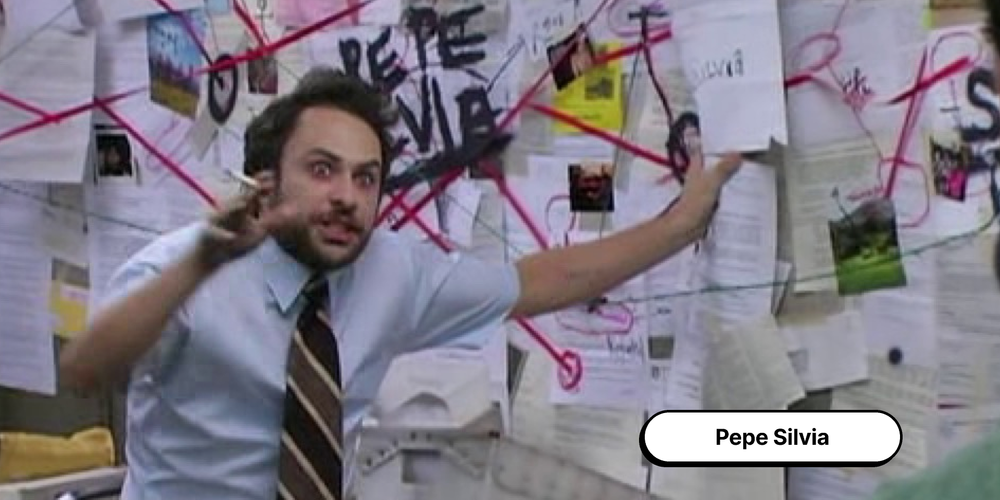

Меня зовут Ангелина и это мой первый сайт. Наверное, стоит рассказать немного о себе. Программирование для меня всегда было очень страшной и темной областью, в которую я боялась заходить, но благодаря программе "КОД" я смогла попробовать себя в этом увлекательном занятии. На самом деле,мне очень понравилось создавать этот сайт, хотя решение начать этим заниматься было двольно спонтанным.
В моей жизни абсолютно все происходит спонтанно. Именно так я начала изучать языки, гитару, вокал, рисование, актерское мастерство, химию и математиматику. Но любовью всей моей жизни навсегда остаются мюзиклы и актеры театра. Моей мечтой является хоть раз побывать в Нью-Йорке на улице Бродвей и увидеть все эти шоу в реальной жизни. Надеюсь, что в один день я смогу себе это позволить.
Также особое место в моем сердце занимает вселенная фильмов и комиксов "Тихоокеанский рубеж" и их актеры. Наверное, каждый из нас видел мем про теорию заговора и человека с сигаретой рядом со стеной, указывающий на все свои находки по этой теории. Так вот, это момент с Чарли Дейем из "В Филадельфии всегда солнечно", этот актер также засветился в "Тихоокеанском рубеже"
Да-да, тот самый мем. Не забывайте мечтать пробовать что-то новое. Адьос.